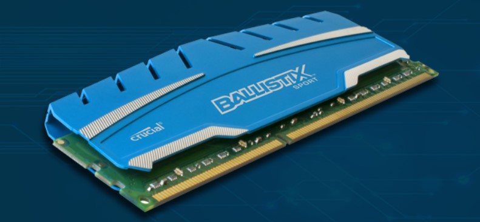

A look at the Ryzen 9 7950X3D
September 30, 2023 by Keithley Meade
The Ryzen 9 7950X3D is the AMD’s newest big-name addition to the Ryzen family
of CPUs. We wanted to spotlight a recent build featuring all 16 of its cores in
the Raptor Signature Edition. Running 32 threads and utilizing AMD’s 3D cache technology,
the processor is absolutely no slouch, which proved true during testing
Some of its specs include: Kingston Fury RGB DDR5 RAM (32GB), 2TB Samsung 990 PRO 2 SSD, Custom AIO Watercooling, 360mm, GeForce RTX 4090
I would recomend this processor to those who are running programs (or games!) that demand a lot of L3 cache, or stress single cores.
It has plenty of firepower for multithreaded applications as well
How important is RAM speed?
October 10, 2023 by Keithley Meade

Frequently asked concerns about RAM speed include what is ideal and how crucial it is for particular applications, such as gaming. The solution is a bit more nuanced than just "higher number = better."
So what precisely is it, and how crucial is RAM speed?
Let's first define a few concepts since RAM speed is a bit of a misnomer. The frequency, bandwidth, total number of channels, quantity, dual data rate (DDR), latency, and even the speed/generation of your processor are all elements that affect how quickly system RAM operates. For the purposes of this discussion, I'll assume that most users mean the frequency of the RAM, or the amount of requests it can process per second, when they talk about "RAM speed." The RAM standard normally comes right after the DDR version and expresses RAM frequency in MHz. For instance, 8GB of DDR4-2400 RAM operates at a 2400MHz frequency. RAM typically operates between 800MHz and 1600MHz in older DDR2 modules DDR5 is capable of speeds of up to 6800MHz.
It's crucial to keep in mind that system RAM does not handle command processes in the same manner that the CPU does. As a result, while a higher CPU frequency nearly always translates into improved PC performance, the same may not be true for high frequency RAM. Because of this, even while RAM with a higher frequency is inherently quicker, the greater speed frequently does not result in better performance in the real world.